The lipids are a large and diverse group of naturally occurring organic compounds that are related by their solubility in nonpolar organic solvents (e.g. ether, chloroform, acetone & benzene) and general insolubility in water. There is great structural variety among the lipids, as will be demonstrated in the following sections. You may click on a topic listed below, or proceed page by page.
Fatty Acids Soaps and Detergents Fats and Oils Waxes Phospholipids Eicosonoids Terpenes Steroids Lipid Soluble Vitamins Biosynthetic Pathways
The common feature of these lipids is that they are all esters of moderate to long chain fatty acids. Acid or base-catalyzed hydrolysis yields the component fatty acid, some examples of which are given in the following table, together with the alcohol component of the lipid. These long-chain carboxylic acids are generally referred to by their common names, which in most cases reflect their sources. Natural fatty acids may be saturated or unsaturated, and as the following data indicate, the saturated acids have higher melting points than unsaturated acids of corresponding size. The double bonds in the unsaturated compounds listed on the right are all cis (or Z).
Formula
Common Name
Melting Point
The higher melting points of the saturated fatty acids reflect the uniform rod-like shape of their molecules. The cis-double bond(s) in the unsaturated fatty acids introduce a kink in their shape, which makes it more difficult to pack their molecules together in a stable repeating array or crystalline lattice. The trans-double bond isomer of oleic acid, known as elaidic acid, has a linear shape and a melting point of 45 ºC (32 ºC higher than its cis isomer). The shapes of stearic and oleic acids are displayed in the models below. You may examine models of these compounds by clicking on the desired model picture.
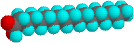
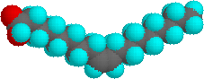
stearic acid
oleic acid
Two polyunsaturated fatty acids, linoleic and linolenic, are designated "essential" because their absence in the human diet has been associated with health problems, such as scaley skin, stunted growth and increased dehydration. These acids are also precursors to the prostaglandins, a family of physiologically potent lipids present in minute amounts in most body tissues.
Because of their enhanced acidity, carboxylic acids react with bases to form ionic salts, as shown in the following equations. In the case of alkali metal hydroxides and simple amines (or ammonia) the resulting salts have pronounced ionic character and are usually soluble in water. Heavy metals such as silver, mercury and lead form salts having more covalent character (3rd example), and the water solubility is reduced, especially for acids composed of four or more carbon atoms.
Carboxylic acids and salts having alkyl chains longer than eight carbons exhibit unusual behavior in water due to the presence of both hydrophilic (CO2) and hydrophobic (alkyl) regions in the same molecule. Such molecules are termed amphiphilic (Gk. amphi = both) or amphipathic.
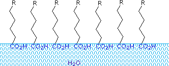
Alkali metal salts of fatty acids are more soluble in water than the acids themselves, and the amphiphilic character of these substances also make them strong surfactants. The most common examples of such compounds are soaps and detergents, four of which are shown below. Note that each of these molecules has a nonpolar hydrocarbon chain, the "tail", and a polar (often ionic) "head group". The use of such compounds as cleaning agents is facilitated by their surfactant character, which lowers the surface tension of water, allowing it to penetrate and wet a variety of materials.
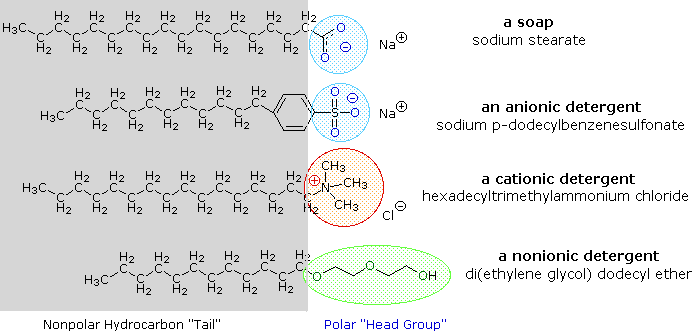
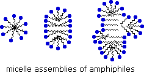
An animated display of micelle formation is presented below. Notice the brownish material in the center of the three-dimensional drawing on the left. This illustrates a second important factor contributing to the use of these amphiphiles as cleaning agents. Micelles are able to encapsulate nonpolar substances such as grease within their hydrophobic center, and thus solubilize it so it is removed with the wash water. Since the micelles of anionic amphiphiles have a negatively charged surface, they repel one another and the nonpolar dirt is effectively emulsified. To summarize, the presence of a soap or a detergent in water facilitates the wetting of all parts of the object to be cleaned, and removes water-insoluble dirt by incorporation in micelles. If the animation has stopped, it may be restarted by clicking on it.
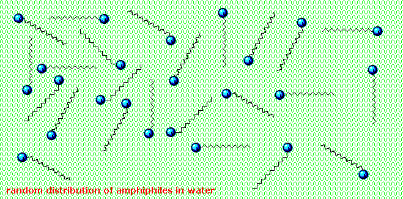
The oldest amphiphilic cleaning agent known to humans is soap. Soap is manufactured by the base-catalyzed hydrolysis (saponification) of animal fat (see below). Before sodium hydroxide was commercially available, a boiling solution of potassium carbonate leached from wood ashes was used. Soft potassium soaps were then converted to the harder sodium soaps by washing with salt solution. The importance of soap to human civilization is documented by history, but some problems associated with its use have been recognized. One of these is caused by the weak acidity (pKa ca. 4.9) of the fatty acids. Solutions of alkali metal soaps are slightly alkaline (pH 8 to 9) due to hydrolysis. If the pH of a soap solution is lowered by acidic contaminants, insoluble fatty acids precipitate and form a scum. A second problem is caused by the presence of calcium and magnesium salts in the water supply (hard water). These divalent cations cause aggregation of the micelles, which then deposit as a dirty scum. These problems have been alleviated by the development of synthetic amphiphiles called detergents (or syndets). By using a much stronger acid for the polar head group, water solutions of the amphiphile are less sensitive to pH changes. Also the sulfonate functions used for virtually all anionic detergents confer greater solubility on micelles incorporating the alkaline earth cations found in hard water. Variations on the amphiphile theme have led to the development of other classes, such as the cationic and nonionic detergents shown above. Cationic detergents often exhibit germicidal properties, and their ability to change surface pH has made them useful as fabric softeners and hair conditioners. These versatile chemical "tools" have dramatically transformed the household and personal care cleaning product markets over the past fifty years.
The triesters of fatty acids with glycerol (1,2,3-trihydroxypropane) compose the class of lipids known as fats and oils. These triglycerides (or triacylglycerols) are found in both plants and animals, and compose one of the major food groups of our diet. Triglycerides that are solid or semisolid at room temperature are classified as fats, and occur predominantly in animals. Those triglycerides that are liquid are called oils and originate chiefly in plants, although triglycerides from fish are also largely oils. Some examples of the composition of triglycerides from various sources are given in the following table.
Saturated Acids (%)
Unsaturated Acids (%)
Source
Animal Fats
Plant Oils
As might be expected from the properties of the fatty acids, fats have a predominance of saturated fatty acids, and oils are composed largely of unsaturated acids. Thus, the melting points of triglycerides reflect their composition, as shown by the following examples. Natural mixed triglycerides have somewhat lower melting points, the melting point of lard being near 30 º C, whereas olive oil melts near -6 º C. Since fats are valued over oils by some Northern European and North American populations, vegetable oils are extensively converted to solid triglycerides (e.g. Crisco) by partial hydrogenation of their unsaturated components. Some of the remaining double bonds are isomerized (to trans) in this operation. These saturated and trans-fatty acid glycerides in the diet have been linked to long-term health issues such as atherosclerosis.
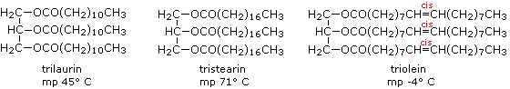
Triglycerides having three identical acyl chains, such as tristearin and triolein (above), are called "simple", while those composed of different acyl chains are called "mixed". If the acyl chains at the end hydroxyl groups (1 & 3) of glycerol are different, the center carbon becomes a chiral center and enantiomeric configurations must be recognized.
The hydrogenation of vegetable oils to produce semisolid products has had unintended consequences. Although the hydrogenation imparts desirable features such as spreadability, texture, "mouth feel," and increased shelf life to naturally liquid vegetable oils, it introduces some serious health problems. These occur when the cis-double bonds in the fatty acid chains are not completely saturated in the hydrogenation process. The catalysts used to effect the addition of hydrogen isomerize the remaining double bonds to their trans configuration. These unnatural trans-fats appear to to be associated with increased heart disease, cancer, diabetes and obesity, as well as immune response and reproductive problems.
Waxes are esters of fatty acids with long chain monohydric alcohols (one hydroxyl group). Natural waxes are often mixtures of such esters, and may also contain hydrocarbons. The formulas for three well known waxes are given below, with the carboxylic acid moiety colored red and the alcohol colored blue.
spermaceti
beeswax
carnuba wax
CH3(CH2)14CO2-(CH2)15CH3
CH3(CH2)24CO2-(CH2)29CH3
CH3(CH2)30CO2-(CH2)33CH3
Waxes are widely distributed in nature. The leaves and fruits of many plants have waxy coatings, which may protect them from dehydration and small predators. The feathers of birds and the fur of some animals have similar coatings which serve as a water repellent. Carnuba wax is valued for its toughness and water resistance.
Phospholipids are the main constituents of cell membranes. They resemble the triglycerides in being ester or amide derivatives of glycerol or sphingosine with fatty acids and phosphoric acid. The phosphate moiety of the resulting phosphatidic acid is further esterified with ethanolamine, choline or serine in the phospholipid itself. The following diagram shows the structures of some of these components. Clicking on the diagram will change it to display structures for two representative phospholipids. Note that the fatty acid components (R & R') may be saturated or unsaturated. To see a model of a phospholipid Click Here.
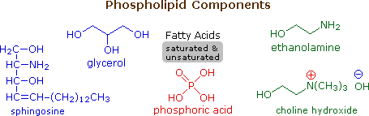
As ionic amphiphiles, phospholipids aggregate or self-assemble when mixed with water, but in a different manner than the soaps and detergents. Because of the two pendant alkyl chains present in phospholipids and the unusual mixed charges in their head groups, micelle formation is unfavorable relative to a bilayer structure. If a phospholipid is smeared over a small hole in a thin piece of plastic immersed in water, a stable planar bilayer of phospholipid molecules is created at the hole. As shown in the following diagram, the polar head groups on the faces of the bilayer contact water, and the hydrophobic alkyl chains form a nonpolar interior. The phospholipid molecules can move about in their half the bilayer, but there is a significant energy barrier preventing migration to the other side of the bilayer. To see an enlarged segment of a phospholipid bilayer Click Here.
This bilayer membrane structure is also found in aggregate structures called liposomes. Liposomes are microscopic vesicles consisting of an aqueous core enclosed in one or more phospholipid layers. They are formed when phospholipids are vigorously mixed with water. Unlike micelles, liposomes have both aqueous interiors and exteriors.
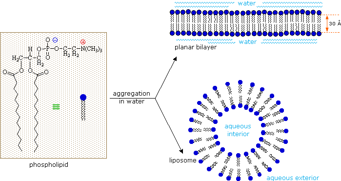
A cell may be considered a very complex liposome. The bilayer membrane that separates the interior of a cell from the surrounding fluids is largely composed of phospholipids, but it incorporates many other components, such as cholesterol, that contribute to its structural integrity. Protein channels that permit the transport of various kinds of chemical species in and out of the cell are also important components of cell membranes. A very nice dynamic display of the gramicidin channel has been created by a collaboration of Canadian, French, Spanish and US scientists, and may be examined by Clicking Here. The interior of a cell contains a variety of structures (organelles) that conduct chemical operations vital to the cells existence. Molecules bonded to the surfaces of cells serve to identify specific cells and facilitate interaction with external chemical entities.
The sphingomyelins are also membrane lipids. They are the major component of the myelin sheath surrounding nerve fibers. Multiple Sclerosis is a devastating disease in which the myelin sheath is lost, causing eventual paralysis.
The members of this group of structurally related natural hormones have an extraordinary range of biological effects. They can lower gastric secretions, stimulate uterine contractions, lower blood pressure, influence blood clotting and induce asthma-like allergic responses. Because their genesis in body tissues is tied to the metabolism of the essential fatty acid arachadonic acid (5,8,11,14-eicosatetraenoic acid) they are classified as eicosanoids. Many properties of the common drug aspirin result from its effect on the cascade of reactions associated with these hormones. The metabolic pathways by which arachidonic acid is converted to the various eicosanoids are complex and will not be discussed here. A rough outline of some of the transformations that take place is provided below. It is helpful to view arachadonic acid in the coiled conformation shown in the shaded box.
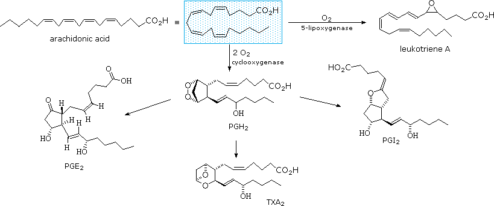
Leukotriene A is a precursor to other leukotriene derivatives by epoxide opening reactions. The prostaglandins are given systematic names that reflect their structure. The initially formed peroxide PGH2 is a common intermediate to other prostaglandins, as well as thromboxanes such as TXA2. To see a model of prostaglandin PGE2 Click Here.
Compounds classified as terpenes constitute what is arguably the largest and most diverse class of natural products. A majority of these compounds are found only in plants, but some of the larger and more complex terpenes ( e.g. squalene & lanosterol ) occur in animals. Terpenes incorporating most of the common functional groups are known, so this does not provide a useful means of classification. Instead, the number and structural organization of carbons is a definitive characteristic. Terpenes may be considered to be made up of isoprene ( more accurately isopentane ) units, an empirical feature known as the isoprene rule. Because of this, terpenes usually have 5n carbon atoms ( n is an integer ), and are subdivided as follows:
Classification
Isoprene Units
Carbon Atoms
monoterpenes
sesquiterpenes
diterpenes
sesterterpenes
triterpenes
Isoprene itself, a C5H8 gaseous hydrocarbon, is emitted by the leaves of various plants as a natural byproduct of plant metabolism. Next to methane it is the most common volatile organic compound found in the atmosphere. Examples of C10 and higher terpenes, representing the four most common classes are shown in the following diagram. The initial display is of monoterpenes; larger terpenes will be shown by clicking the "Toggle Structures" button under the diagram. Most terpenes may be structurally dissected into isopentane segments. To see how this is done click directly on the structures in the diagram.
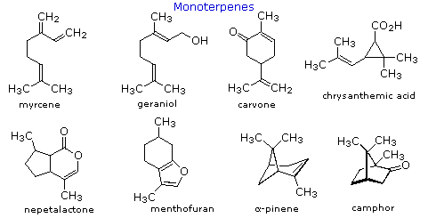
The isopentane units in most of these terpenes are easy to discern, and are defined by the shaded areas. In the case of the monoterpene camphor, the units overlap to such a degree it is easier to distinguish them by coloring the carbon chains. This is also done for alpha-pinene. In the case of the triterpene lanosterol we see an interesting deviation from the isoprene rule. This thirty carbon compound is clearly a terpene, and four of the six isopentane units can be identified. However, the ten carbons in center of the molecule cannot be dissected in this manner. Evidence exists that the two methyl groups circled in magenta and light blue have moved from their original isoprenoid locations (marked by small circles of the same color) to their present location. This rearrangement is described in the biosynthesis section. Similar alkyl group rearrangements account for other terpenes that do not strictly follow the isoprene rule.
To see a model of the monoterpene camphor Click Here.
Polymeric isoprenoid hydrocarbons have also been identified. Rubber is undoubtedly the best known and most widely used compound of this kind. It occurs as a colloidal suspension called latex in a number of plants, ranging from the dandelion to the rubber tree (Hevea brasiliensis). Rubber is a polyene, and exhibits all the expected reactions of the C=C function. Bromine, hydrogen chloride and hydrogen all add with a stoichiometry of one molar equivalent per isoprene unit. Ozonolysis of rubber generates a mixture of levulinic acid ( CH3COCH2CH2CO2H ) and the corresponding aldehyde. Pyrolysis of rubber produces the diene isoprene along with other products.
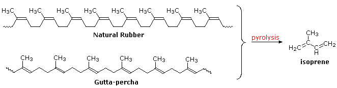
The double bonds in rubber all have a Z-configuration, which causes this macromolecule to adopt a kinked or coiled conformation. This is reflected in the physical properties of rubber. Despite its high molecular weight (about one million), crude latex rubber is a soft, sticky, elastic substance. Chemical modification of this material is normal for commercial applications. Gutta-percha (structure above) is a naturally occurring E-isomer of rubber. Here the hydrocarbon chains adopt a uniform zig-zag or rod like conformation, which produces a more rigid and tough substance. Uses of gutta-percha include electrical insulation and the covering of golf balls. To see a model of the rubber chain Click Here.
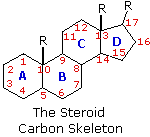
The important class of lipids called steroids are actually metabolic derivatives of terpenes, but they are customarily treated as a separate group. Steroids may be recognized by their tetracyclic skeleton, consisting of three fused six-membered and one five-membered ring, as shown in the diagram to the right. The four rings are designated A, B, C & D as noted, and the peculiar numbering of the ring carbon atoms (shown in red) is the result of an earlier misassignment of the structure. The substituents designated by R are often alkyl groups, but may also have functionality. The R group at the A:B ring fusion is most commonly methyl or hydrogen, that at the C:D fusion is usually methyl. The substituent at C-17 varies considerably, and is usually larger than methyl if it is not a functional group. The most common locations of functional groups are C-3, C-4, C-7, C-11, C-12 & C-17. Ring A is sometimes aromatic. Since a number of tetracyclic triterpenes also have this tetracyclic structure, it cannot be considered a unique identifier.
Steroids are widely distributed in animals, where they are associated with a number of physiological processes. Examples of some important steroids are shown in the following diagram. Different kinds of steroids will be displayed by clicking the "Toggle Structures" button under the diagram. Norethindrone is a synthetic steroid, all the other examples occur naturally. A common strategy in pharmaceutical chemistry is to take a natural compound, having certain desired biological properties together with undesired side effects, and to modify its structure to enhance the desired characteristics and diminish the undesired. This is sometimes accomplished by trial and error. The generic steroid structure drawn above has seven chiral stereocenters (carbons 5, 8, 9, 10, 13, 14 & 17), which means that it may have as many as 128 stereoisomers. With the exception of C-5, natural steroids generally have a single common configuration. This is shown in the last of the toggled displays, along with the preferred conformations of the rings.
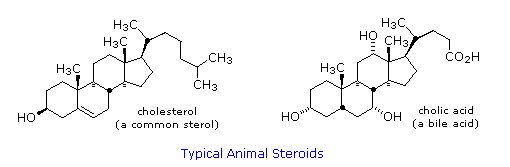
Chemical studies of the steroids were very important to our present understanding of the configurations and conformations of six-membered rings. Substituent groups at different sites on the tetracyclic skeleton will have axial or equatorial orientations that are fixed because of the rigid structure of the trans-fused rings. This fixed orientation influences chemical reactivity, largely due to the greater steric hindrance of axial groups versus their equatorial isomers. Thus an equatorial hydroxyl group is esterified more rapidly than its axial isomer. To see a model of the steroid cholesterol Click Here.
It is instructive to examine a simple bicyclic system as a model for the fused rings of the steroid molecule. Decalin, short for decahydronaphthalene, exists as cis and trans isomers at the ring fusion carbon atoms. Planar representations of these isomers are drawn at the top of the following diagram, with corresponding conformational formulas displayed underneath. The numbering shown for the ring carbons follows IUPAC rules, and is different from the unusual numbering used for steroids. For purposes of discussion, the left ring is labeled A (colored blue) and the right ring B (colored red). In the conformational drawings the ring fusion and the angular hydrogens are black.
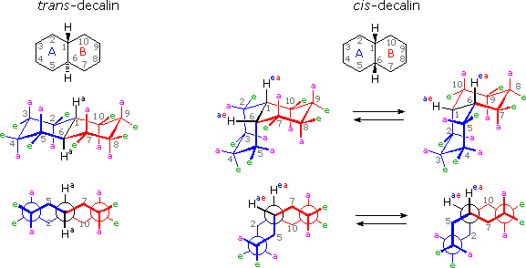
The trans-isomer is the easiest to describe because the fusion of the A & B rings creates a rigid, roughly planar, structure made up of two chair conformations. Each chair is fused to the other by equatorial bonds, leaving the angular hydrogens (Ha) axial to both rings. Note that the bonds directed above the plane of the two rings alternate from axial to equatorial and back if we proceed around the rings from C-1 to C-10 in numerical order. The bonds directed below the rings also alternate in a complementary fashion. Conformational descriptions of cis- decalin are complicated by the fact that two energetically equivalent fusions of chair cyclohexanes are possible, and are in rapid equilibrium as the rings flip from one chair conformation to the other. In each of these all chair conformations the rings are fused by one axial and one equatorial bond, and the overall structure is bent at the ring fusion. In the conformer on the left, the red ring (B) is attached to the blue ring (A) by an axial bond to C-1 and an equatorial bond to C-6 (these terms refer to ring A substituents). In the conformer on the right, the carbon bond to C-1 is equatorial and the bond to C-6 is axial. Each of the angular hydrogens (Hae or Hea) is oriented axial to one of the rings and equatorial to the other. This relationship reverses when double ring flipping converts one cis-conformer into the other. Cis-decalin is less stable than trans-decalin by about 2.7 kcal/mol (from heats of combustion and heats of isomerization data). This is due to steric crowding (hindrance) of the axial hydrogens in the concave region of both cis-conformers, as may be seen in the model display activated by the following button. This difference is roughly three times the energy of a gauche butane conformer relative to its anti conformer. Indeed three gauche butane interactions may be identified in each of the cis-decalin conformations, as will be displayed by clicking on the above conformational diagram. These gauche interactions are also shown in the model. To see models of cis & trans-decalin Click Here.
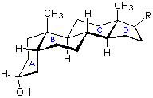
Steroids in which rings A and B are fused cis, such as the example on the right, do not have the same conformational mobility exhibited by cis-decalin. The fusion of ring C to ring B in a trans configuration prevents ring B from undergoing a conformational flip to another chair form. If this were to occur, ring C would have to be attached to ring B by two adjacent axial bonds directed 180º apart. This is too great a distance to be bridged by the four carbon atoms making up ring C. Consequently, the steroid molecule is locked in the all chair conformation shown here. Of course, all these steroids and decalins may have one or more six-membered rings in a boat conformation. However the high energy of boat conformers relative to chairs would make such structures minor components in the overall ensemble of conformations available to these molecules.
The essential dietary substances called vitamins are commonly classified as "water soluble" or "fat soluble". Water soluble vitamins, such as vitamin C, are rapidly eliminated from the body and their dietary levels need to be relatively high. The recommended daily allotment (RDA) of vitamin C is 100 mg, and amounts as large as 2 to 3 g are taken by many people without adverse effects. The lipid soluble vitamins, shown in the diagram below, are not as easily eliminated and may accumulate to toxic levels if consumed in large quantity. The RDA for these vitamins are:
Vitamin A 800 μg ( upper limit ca. 3000 μg) Vitamin D 5 to 10 μg ( upper limit ca. 2000 μg) Vitamin E 15 mg ( upper limit ca. 1 g) Vitamin K 110 μg ( upper limit not specified)
From this data it is clear that vitamins A and D, while essential to good health in proper amounts, can be very toxic. Vitamin D, for example, is used as a rat poison, and in equal weight is more than 100 times as poisonous as sodium cyanide.
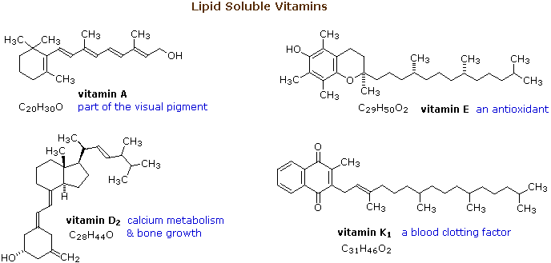
From the structures shown here, it should be clear that these compounds have more than a solubility connection with lipids. Vitamins A is a terpene, and vitamins E and K have long terpene chains attached to an aromatic moiety. The structure of vitamin D can be described as a steroid in which ring B is cut open and the remaining three rings remain unchanged. The precursors of vitamins A and D have been identified as the tetraterpene beta-carotene and the steroid ergosterol, respectively. Structures for these will be displayed by clicking on the vitamin diagram above.
The complex organic compounds found in living organisms on this planet originate from photosynthesis, an endothermic reductive condensation of carbon dioxide requiring light energy and the pigment chlorophyll.
x CO2 + x H2O + energy CxH2xOx + x O2
The products of photosynthesis are a class of compounds called carbohydrates, the most common and important of which is glucose (C6H12O6). Subsequent reactions effect an oxidative cleavage of glucose to pyruvic acid (CH3COCO2H), and this in turn is transformed to the two-carbon building block, acetate. The multitude of lipid structures described here are constructed from acetate by enzymatic reactions that in many respects correspond to reactions used by chemists for laboratory syntheses of similar compounds. However, an important restriction is that the reagents and conditions must be compatible with the aqueous medium, neutral pH and moderate temperatures found in living cells. Consequently, the condensation, alkylation, oxidation and reduction reactions that accomplish the biosynthesis of lipids will not make use of the very strong bases, alkyl halides, chromate oxidants or metal hydride reducing agents that are employed in laboratory work.
Claisen condensation of ethyl acetate (or other acetate esters) forms an acetoacetate ester, as illustrated by the top equation in the following diagram. Reduction, dehydration and further reduction of this product would yield an ester of butyric acid, the overall effect being the elongation of the acetate starting material by two carbons. In principle, repetition of this sequence would lead to longer chain acids, made up of an even number of carbon atoms. Since most of the common natural fatty acids have even numbers of carbon atoms, this is an attractive hypothesis for their biosynthesis. Nature's solution to carrying out a Claisen-like condensation in a living cell is shown in the bottom equation of the diagram. Thioesters are more reactive as acceptor reactants than are ordinary esters, and preliminary conversion of acetate to malonate increases the donor reactivity of this species. The thiol portion of the thioester is usually a protein of some kind, with efficient acetyl transport occurring by way of acetyl coenzyme A. Depending on the enzymes involved, the condensation product may be reduced and then further elongated so as to produce fatty acids (as shown), or elongated by further condensations to polyketone intermediates that are precursors to a variety of natural phenolic compounds. Click on the diagram to see examples of polyketone condensations.
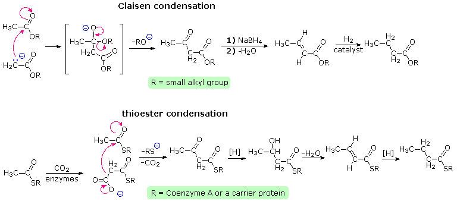
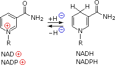
The reduction steps (designated by [H] in the equations) and the intervening dehydrations needed for fatty acid synthesis require unique coenzymes and phosphorylating reagents. The pyridine ring of nicotinamide adenine dinucleotide (NAD) and its 2'-phosphate derivative (NADP) function as hydride acceptors, and the corresponding reduced species (NADH & NADPH) as a hydride donors. Partial structures for these important redox reagents are shown on the right. Full structures may be seen by clicking on the partial formulas.
As noted earlier, the hydroxyl group is a poor anionic leaving group (hydroxide anion is a strong base). Phosphorylation converts a hydroxyl group into a phosphate (PO4) or pyrophosphate (P2O7) ester, making it a much better leaving group (the pKas at pH near 7 are 7.2 and 6.6 respectively). The chief biological phosphorylation reagents are phosphate derivatives of adenosine (a ribose compound). The strongest of these is the triphosphate ATP, with the diphosphate and monophosphate being less powerful. Formulas for these compounds may be seen by Clicking Here The overall process of fatty acid synthesis is summarized for palmitic acid, CH3(CH2)14CO2H, in the following equation:
8 CH3CO-CoA + 14 NADPH + 14 H(+) + 7 ATP + H2O CH3(CH2)14CO2H + 8 CoA + 14 NADP(+) + 7 ADP + 7 H2PO4(–)
The branched chain and cyclic structures of the terpenes and steroids are constructed by sequential alkylation reactions of unsaturated isopentyl pyrophosphate units. As depicted in the following diagram, these 5-carbon reactants are made from three acetate units by way of an aldol-like addition of a malonate intermediate to acetoacetate. Selective hydrolysis and reduction gives a key intermediate called mevalonic acid. Phosphorylation and elimination of mevalonic acid then generate isopentenyl pyrophosphate, which is in equilibrium with its double bond isomer, dimethylallyl pyrophosphate. The allylic pyrophosphate group in the latter compound is reactive in enzymatically catalyzed alkylation reactions, such as the one drawn in the green box. This provides support for the empirical isoprene rule.
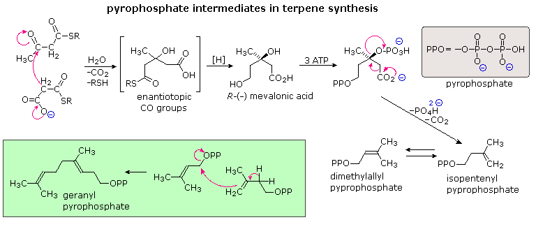
The simplest fashion in which isopentane units combine is termed "head-to-tail". This is the combination displayed in the green box, and these terms are further defined in the upper equation that will appear above on clicking the "Toggle Examples" button. Non head-to-tail coupling of isopentane units is also observed, as in the chrysanthemic acid construction shown in the second equation. A second click on the diagram displays the series of cation-like cyclizations and rearrangements, known as the Stork-Eschenmoser hypothesis, that have been identified in the biosynthesis of the triterpene lanosterol. Lanosterol is a precursor in the biosynthesis of steroids. This takes place by metabolic removal of three methyl groups and degradation of the side chain.
For many years, the mevalonic acid route to isopentenyl pyrophosphate was considered an exclusive biosynthetic pathway. Recently, an alternative reaction sequence, starting from pyruvic acid and glyceraldehyde-3-phosphate, has been identified (bottom equations in the following diagram). By labeling selective carbon atoms (colored red) these distinct paths are easily distinguished. The new, DXP (1-deoxyxylulose-5-phosphate) path is widespread in microorganisms and chloroplast terpenes. The rearrangement to 2-methylerythritol-4-phosphate is an extraordinary transformation.
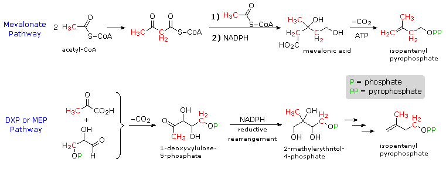
This page is the property of The Edvibe Team. Comments, questions and errors should be sent to contact@edvibe.co.ke. These pages are provided to the IOCD to assist in capacity building in chemical education. 05/05/2013